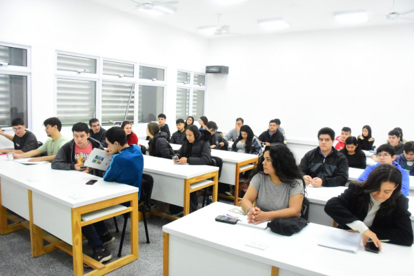
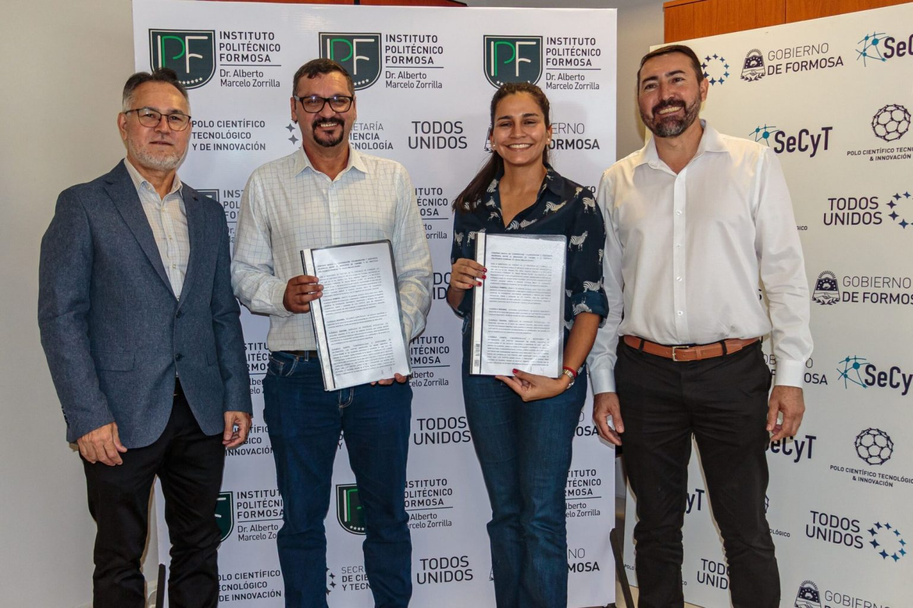
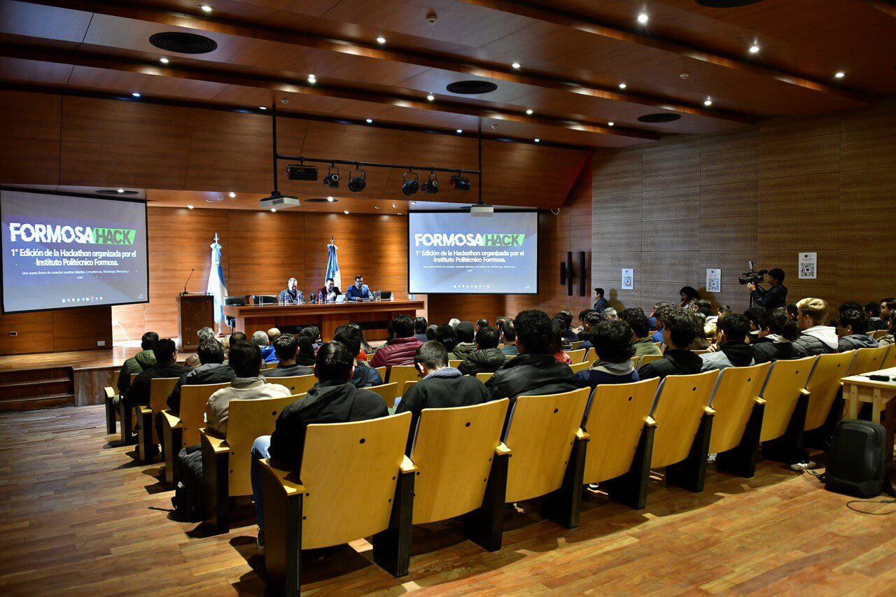

Estudiantes
Ofrece educación técnica y tecnológica orientada al trabajo y la producción, con foco en el desarrollo socioeconómico local, regional y nacional. Promueve la formación continua, la actualización profesional y la articulación entre educación, ciencia y sector productivo. Además, busca fortalecer los sectores locales y actuar como centro de referencia en innovación y capacitación científico-tecnológica.

Relaciones
Fortalece la vinculación entre educación, ciencia y tecnología con las necesidades del trabajo y el desarrollo local. Orienta la formación para impulsar sectores productivos, sociales y culturales, y promueve la articulación entre distintos niveles de educación técnica, optimizando recursos e infraestructura.

Objetivo
Busca ser un centro de referencia en desarrollo científico y tecnológico, promoviendo investigación aplicada, capacitación y vinculación con instituciones educativas. Además, impulsa la divulgación, la innovación y la transferencia de conocimientos orientados al desarrollo local sostenible y al cuidado del ambiente.